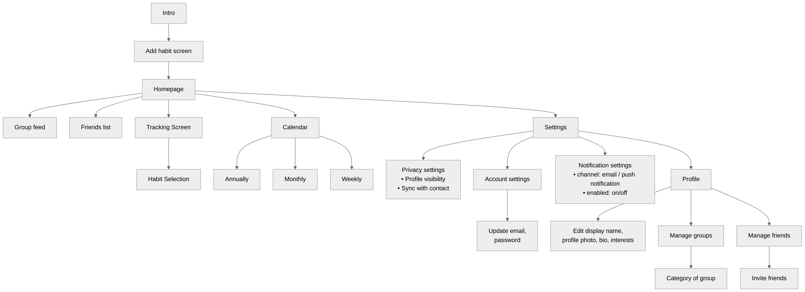
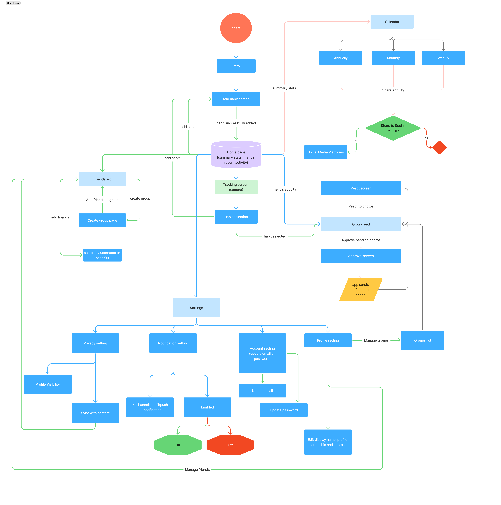
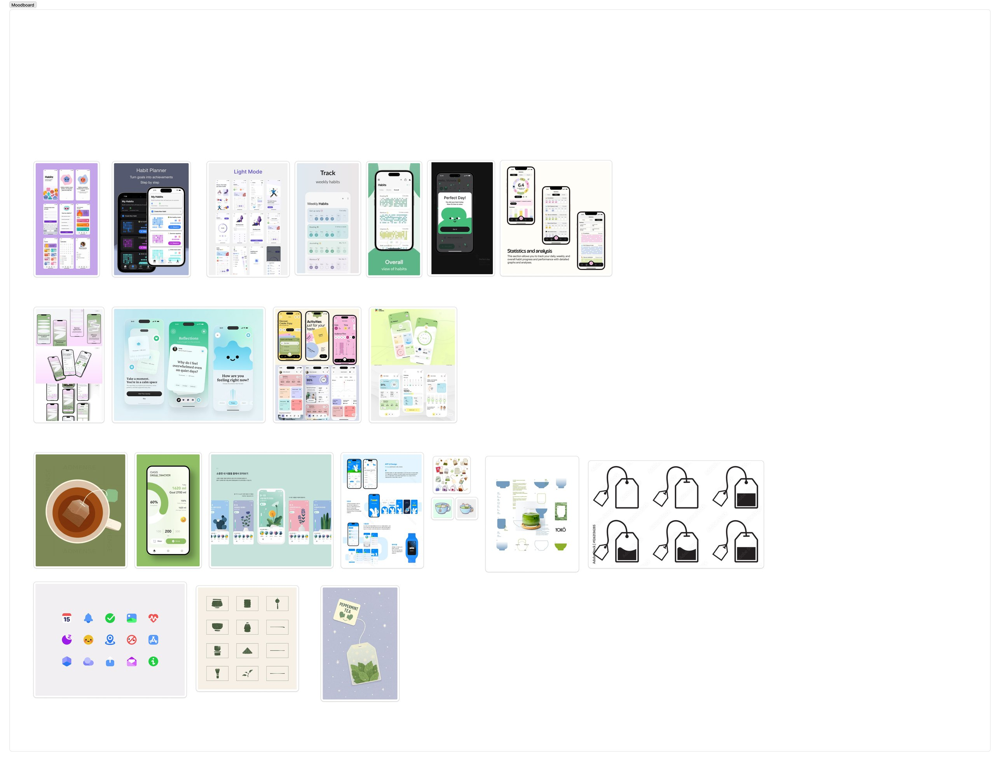

brainstorming
We started with a freestyle brainstorming session to talk about the apps we're inspired by and what's trending. We kept the scope wide on purpose to make room for creativity.
Through the project we found that working together makes us more effective, so we set out to bring that same benefit to habits tracking, building a mechanism that bakes peer encouragements into the journey.
Market Research
Once we had a broad direction, research became a loop between the AI's breadth and our own judgement.
-
AI · surfaced
A list of similar apps based on our broad direction.
-
We · narrowed
Down to four competitors — direct, or adjacent with proven success (>100k downloads).
-
AI · researched
In-depth: strengths, gaps, estimated DAU and time in market.
-
We · added
Notes from personally downloading and testing each app, folded into the final analysis.
User Personas
AI drafted the three personas from the research and framing, we then reviewed and sharpened them.
A junior marketing associate who's downloaded four habit trackers — each died within three weeks. She'd skip a day, feel guilty, then avoid the app. Her frustration: "nobody knows when I quit, so quitting is free."
Long-distance friends who already text "did you run today?" They want a private two-person pact with proof, because a text saying "yep, ran" is easy to fake.
Runs a "75 Hard"-style challenge with seven coworkers every January, managed through a group chat full of unverifiable claims. She'll pay for a group plan, custom rules and templates.
Information Architecture
This stages is built by hand from the reviewed personas. We kept it handcrafted so we were intentional about how information is structured.

User journey
Again, we plotted the user journey by hand. This forced us to think through the entire flow, uncovering gaps along the way.
For example, user should take a photo first, then select the habit, instead of the other way round to reduce the friction of tracking.

Design guide
We built a moodboard, then chose the palette and typography for our target audience: working adults. We aimed for trust and professionalism, while keeping fun elements so habit tracking stays enjoyable.
